Mutable Dreams FM-1 2.4 by Kid Bunka keeps every function of 2.3 and adds 664 tones, 300 factory entries, 25 Dreams, four optional effects, Grain LFO targets, LOOK controls and help on every long hold. This chapter gives practical recipes and an honest list of limits. Existing 2.3 illustrations stay labelled 2.3 for unchanged controls.
Help on every long hold
Any function button, long hold
Hold any function button for about 0.85 seconds to open a help page that explains the key and knob assignments of the current context.
Releasing after a long hold does not trigger the short action. The next tap closes the help only.
HOME's long hold is now HELP. It no longer opens Itinera; reach Dreams by tapping HOME (the cycle includes Dreams) or through the GLO cycle.
Hold the button you are unsure about.
Read the page for the current context.
Tap once to close it; nothing else happens.
Release without a further tap if you only wanted to read.
Menu combo: SEL + OCT- / OCT+
Hold the SEL button; press OCT- or OCT+
While holding the SEL button, OCT- goes to the previous menu and OCT+ to the next menu within the same family. The sequence wraps around.
The combo is consumed: it does not additionally change octave, mute a track or confirm anything.
Hold the SEL button (not the SELECT rotary encoder).
Press OCT+ for the next page or OCT- for the previous page within the menu family.
Release both. The combo does not also change octave, mute or confirm.
Recall a saved User Biome with an external clock
GLO / USER BANKS > Biomes
With the transport stopped, you can now recall a saved User Biome while a USB, TRS or BLE clock is selected externally. The MIDI input channels, note outputs, mappings and clock selection are preserved.
Saving and clearing still require Internal clock. Itinera still uses the internal clock.
This applies to the hardware panel recall. Bank operations through the current Web Studio editor protocol still require Internal clock; select it before using the browser bank controls.
Stop playback.
Leave the external clock selected on MIDI / PERFORMANCE.
Open GLO / USER BANKS, choose Biomes with K2 and the User slot with K1.
Turn K3 right to recall and check the name and sound.
Press PLAY; it waits for the external clock, and without clock for two seconds playback stops.
Recipe: both Grain LFOs
LFO A / LFO B targets
Both LFOs can target Grain Size (target 7) and Grain Position (target 8). Grains share one bus, so the modulation reaches all grain sources at once. Only newly created grains receive the modulation; grains that already sound stay unchanged.
Projects that use these new routes are rejected by 2.3.
Play a sustained phrase and raise Grain Send on at least one synth track. Existing grains and the clean synth voice stay independent.
Set one LFO target to Grain Size and the other to Grain Position.
Start with a low depth and a slow rate.
Raise one depth at a time; remember that you hear the change only in new grains.
Save as a User Biome if you want to keep it, then back up before any downgrade.
Actual FM-1 build 8FBE5AF8, recorded settings display.
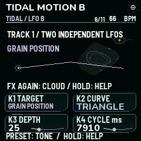
Actual FM-1 build 8FBE5AF8, recorded settings display.
REC cycles through three LOOK pages: LOOK/STARTUP, NIGHT/SOUND and AIR/CHARACTER.
Night mode dims the display. The sleep timer can be set from 15 to 120 minutes; at the end it fades the sound over 30 seconds and stops. It does not switch the unit off, and it is not saved.
The four optional effects (AIR, Chorus, Width and Vintage) are off by default: AIR adds high-passed, level-sensitive noise above 7 kHz, Chorus is slow above 250 Hz, Width widens the sides while preserving the mono sum, and Vintage adds a gentle voice pitch drift.
Open LOOK and press REC to reach NIGHT/SOUND.
Switch on Night and set a sleep time if you want one.
Press REC to reach AIR/CHARACTER and enable one effect at a time, starting low.
Compare with the effect off before keeping it.
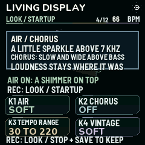
Actual FM-1 build 8FBE5AF8, recorded settings display.
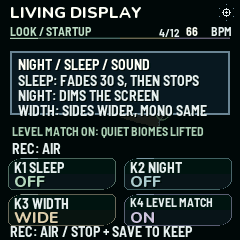
Actual FM-1 build 8FBE5AF8, recorded settings display.
Dreams in 2.4
HOME cycle > Dreams; GLO cycle > Itinera
There are now 25 Dreams, 11 more than in 2.3. Somnium Meum / MY DREAM uses at least four playable starred Biomes; Blank is excluded, and otherwise an explicit fallback is used.
Dream codes contain four base-32 characters: 0–9 and A–X, excluding I and O. 0000 creates a fresh code. Turn SELECT to choose a code position and PRESET to change its character. The same version, settings and code repeat musical structure; a bit-identical recording is not promised.
A short PLAY stops a running Dream, a short SEL keeps the current Biome playing, and a long hold of either opens help without the short action.
Star at least four Biomes you like in the Live List.
Stop transport and tap HOME until Dreams appears.
Choose Somnium Meum / MY DREAM, Length, Pace and Room.
Press PLAY; press SEL to keep the sounding Biome, or PLAY to stop.
Browser, Mixer, tempo and GRIDS
Biome Browser; Mixer; Tempo; GRIDS
The Biome Browser offers NEW and RECENT 8, an A-Z list, a jump-to-letter control and a previous-Biome function.
The Mixer adds pan, peak hold and a clipping indicator.
Internal TempoRange offers /1, /2, /4 and /8 down to 3.75 BPM (the display shows 3.8). An external clock is not divided.
GRIDS has an additional Kit generator 4. Existing pads 4-8 are not cleared. No additional density or chaos front-panel controls were added. Projects using generator 4 are rejected by 2.3.
Safe updates and downgrades
Installer supplied with the 2.4 release
Qualified normal build: 8FBE5AF8, application identity FM-1_710020400, source commit 978562abab66f4c817c226c9adc8329a5c108ad1. Project wire format is version 12 (2604 bytes).
Backup the saved banks and the edited live Biome separately before any update or downgrade.
2.3 rejects projects with routes 7/8 or GRIDS generator 4, so downgrading is not automatically compatible.
Export both saved banks and the edited live Biome.
Check that the package identity and build match.
Run the installer and follow its prompts.
After restart, recall a User Biome and check name and sound.
Before a downgrade, remove or re-save anything using the 2.4-only routes.
Your instrument, this build: what was tested
Reference
Tested on the existing Puya unit. Both processor cores perform real audio work. Free SRAM is 22836 bytes including the mandatory 8192-byte reserve, which is 8016 bytes more than the intermediate build AEC27818 (not a comparison with 2.3).
The scoped hardware suite covered 96 Elements cases (12 FULL, 84 ECO), USB8 isolation and a Handover model-state correction. All original banks, live state and UI were restored byte-exact. A full natural 30-minute Dream was validated. The suite does not cover every possible patch.
The 13 installation legs recorded for 2.3 are historical 2.3 evidence for build CF133B2D. They do not show physical coverage of 8FBE5AF8.
Exact build 8FBE5AF8: 34 model-load windows, SYSTEM checks, 96 Elements cases, 8 USB stem-isolation windows, 6 targeted Handover cases, 20 Grain-LFO windows, menu/help/MIDI/bank checks and a natural 1800.822-second Dream. Highest observed callback 4672/5804 microseconds, below the 5107-microsecond qualification limit. This does not cover every possible patch or a second physical chip type.
Known limits
Reference
Real UC25HQ80 validation is not claimed. Blind-user day-to-day usability is not newly claimed; issue #10 stays open.
A physical, fresh, fully power-disconnected cold start and every historical update route on 8FBE5AF8 are not claimed.
No new whole Clouds, Warps, Marbles or Tides module, no Shimmer reverb, no external sampling and no USB disk mode.
Both cores do real audio work, but there is no universal 2x gain and no first-firmware claim.
Itinera still uses the internal clock. Overwriting a factory Biome in place remains an open request (issue #4). Saving and clearing still need Internal clock.
The screen-reader word list must match 2.4; do not assume the 2.3 file is unchanged.
Dream codes repeat the musical structure only; recordings are not promised to be bit-identical.
The Web Studio is documented as of 2.3; 2.4 content in it is not verified.
The people helping the garden grow
Credits
With special thanks to Sarmiento (Funkelectric), Yimiblú, our Screen Reader testers and the people sharing careful reports, code, ideas and music. Selected DSP by Émilie Gillet / Mutable Instruments; fm1-base and felucca-bsp platform. Created by Kid Bunka.
Chapter 01
Start here
From the first note to a saved sound
1. Turn MASTER down, connect power or USB, then bring the volume up gently.
2. Tap HOME to reach BIOMES. Turn K1 for a family and K2 or PRESET to browse. Press SEL to load Saltglass Drift, then PLAY.
3. Return to Live Atlas with HOME. Raise Space a little and listen for the shared granular cloud. Try Motion and Density one at a time.
4. Open Tracks with HOME. Turn SELECT to highlight a voice, play the keys and press SEL to mute or unmute that voice.
5. Press PLAY to stop, select Internal clock in MIDI / Performance (saving and clearing still require it), then save an edited copy to an empty User Biome slot. Recalling a saved User Biome while stopped also works when an external USB, TRS or BLE clock is selected.
What the instrument stores
A Biome includes sounds, rhythm, harmony, effects, modulation and Journey settings. A Tone is one sound preset. Save the full Biome to keep the relationships between its tracks. Captured audio in the granular buffer is temporary.
How to read this manual
K1-K4 are the four context knobs. SELECT is the track encoder; SEL is a separate button. Turn SELECT normally to choose a track. Hold EDIT, SEQ, FX or GLO and turn SELECT to move through that menu's page wheel. Each menu remembers its last page; the header shows its page number.
Hold any function button for about 0.85 seconds for help. The help page explains the key and knob assignments of the current context. Releasing after a long hold does not also perform the short action, and the next tap closes the help only. HOME no longer has a special long hold: it now opens HELP like every other function button and no longer opens Itinera. Tap HOME to cycle its views, which now include Dreams; the GLO cycle also reaches Itinera. While a dream runs, a short PLAY stops it and a short SEL keeps its current Biome playing; a long hold of PLAY or SEL during a dream opens help without either short action. SELECT+OCT- / OCT+ switches to the previous / next menu within the same family and wraps around (see 'Menu combo').
Chapter 02
Retained from 2.3
At a glance
Mutable Dreams 2.4 keeps every function of 2.3 and adds:
Twelve additional Warm Voices - 664 tones in all. Twenty additional musical Biomes - 300 factory entries including Blank. Eleven additional Dreams - 25 in all, including Somnium Meum / MY DREAM. Four optional effects (AIR, Chorus, Width, Vintage), all off by default. Both LFOs can target Grain Size and Grain Position. A fourth GRIDS Kit generator and slower internal tempo ranges. LOOK controls with Night mode and a sleep timer. Help on a long hold of every function button, including HOME. SELECT+OCT-/OCT+ menu switching. Recall of a saved User Biome with an external clock. Browser and Mixer improvements. Both processor cores now do audio work. Carried over from 2.3 and still present: Tones 641-652, the four Bloom Studies, the two dreams whose pictures follow the notes, living meters that fall at the same speed at any frame rate, a fresh wait for a late external clock and broader screen-reader announcements. The 2.3 counts of 652 tones, 280 Biome entries and fourteen dreams are historical.
The sound engines, the 24 models, the six freely assignable tracks and the saved-patch format (version 12) are unchanged. Existing Biomes, tones and their numbers stay where they were; the new entries are appended.
Twelve new tones
EDIT + PRESET, or HOME > Live List > K1 Tones
EDIT + PRESET: browse · SEL applies to the selected track
The twelve tones use six existing models in pairs: Satin, Silk, Choir, Bowed, Aero and Mellow. They differ in envelope, timbre, filter and breath, not only in name. Any tone fits any of the six tracks; rhythm and notes are kept when a tone is recalled. Every value stays editable afterwards on SOUND, ENVELOPE / BLOOM and VELVET FILTER.
In the Tone List (HOME > Live List > K1 Tones) the twelve tones added in 2.3 keep their numbers 641-652 on the display (IDs 640-651); these historical 2.3 sound IDs are unchanged in 2.4. The twelve additional 2.4 Warm Voices follow at the end of the list, which now holds 664 tones. REC stars a tone; Starred filters the list.
Tone
Model
Character (from its settings)
Petal Strings
Satin
soft onset, long release, warm middle filter
Velour Horizon
Satin
slow swell, very long release, darker filter, gentle breath movement
Silver Pollen
Silk
soft onset, long release, brighter filter, gentle breath movement
Silk Undertow
Silk
slow swell, very long release, warm middle filter, strong breath movement
Open Petal Choir
Choir
soft onset, long release, brighter filter
Dawn Fifth Choir
Choir
slow swell, very long release, darker filter, gentle breath movement
Rosin Lantern
Bowed
soft onset, medium release, warm middle filter
Willow Bow
Bowed
slow swell, very long release, warm middle filter, gentle breath movement
Opal Breath
Aero
soft onset, long release, brighter filter, strong breath movement
Night Seed Air
Aero
slow swell, very long release, darker filter, strong breath movement
Mellow Dew
Mellow
fast onset, medium release, warm middle filter
Honey Afterglow
Mellow
soft onset, very long release, darker filter, gentle breath movement
Reference illustration from 2.3 for retained controls; see the 2.4 chapter for changed operation.
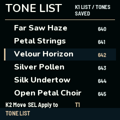
HOME / Tone List with the new tones (simulator)
Reference illustration from 2.3 for retained controls; see the 2.4 chapter for changed operation.
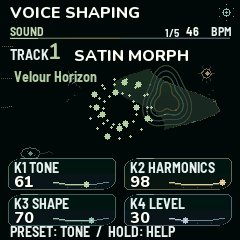
SOUND with Velour Horizon on track 1 (simulator)
Four Bloom Studies
HOME > Biomes
HOME > Biomes · K1 BLOOM STUDIES · K2 or PRESET · SEL load · PLAY
Petals After Rain - 58 BPM, D Dorian. D Dorian: bowed warmth and open choir answer a small felt melody, with long breaths between them. Voices: Willow Bow · Sine Choir · Satin Morph · Round Bass · Velvet Keys · Aero Flute.
Willow Waltz - 87 BPM, A minor. A minor: a lilting twelve-step felt phrase, a soft palm pulse and bowed replies. Voices: Mellow Drift · Willow Bow · Silk Ensemble · Round Bass · Plaits Kick · Plaits Hat.
Blue Hour Bloom - 46 BPM, F major. F major: a wide slow arc through silk, choir and dark rounded strings, with a falling upper answer. Voices: Satin Morph · Silk Ensemble · Sine Choir · Mellow Drift · Aero Flute · Velvet Keys.
Lanterns Upstream - 102 BPM, G Dorian. G Dorian: a hopeful plucked motif and quiet syncopation under slow strings; space for an answering phrase. Voices: Mellow Drift · Willow Bow · Silk Ensemble · Round Bass · Plaits Kick · Velvet Keys.
Each piece has its own phrase lengths, register, contour and event pattern; they are not renamed copies. The patterns, sounds and space are yours to edit. Save your version to a User Biome; the factory pieces stay unchanged.
Reference illustration from 2.3 for retained controls; see the 2.4 chapter for changed operation.
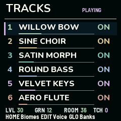
Petals After Rain - Tracks (simulator)
Reference illustration from 2.3 for retained controls; see the 2.4 chapter for changed operation.
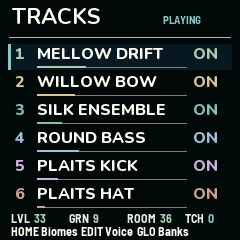
Willow Waltz - Tracks (simulator)
Reference illustration from 2.3 for retained controls; see the 2.4 chapter for changed operation.
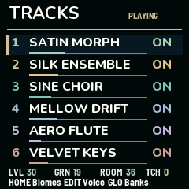
Blue Hour Bloom - Tracks (simulator)
Reference illustration from 2.3 for retained controls; see the 2.4 chapter for changed operation.
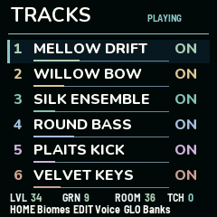
Lanterns Upstream - Tracks (simulator)
Find the new pieces and tones
1. Tap HOME until BIOMES appears. Turn K1 until the filter shows BLOOM STUDIES.
2. Turn K2 or PRESET to browse the four pieces. Press SEL to load, then PLAY.
3. Tap HOME to Tracks to see the six voices. Turn SELECT to a voice; EDIT opens Voice Detail.
4. For a single new tone: HOME > Live List, turn K1 to Tones, browse with K2, press SEL to apply it to the selected track. REC stars it.
Reference illustration from 2.3 for retained controls; see the 2.4 chapter for changed operation.
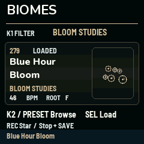
HOME / Biomes filtered to BLOOM STUDIES (simulator)
Dreams that follow the notes
Hold HOME > Help (Itinera: HOME or GLO cycle)
Holding HOME now opens help, not Itinera. To reach Itinera, stop transport and tap HOME until Dreams appears, or use the GLO cycle. Choose a dream such as Terra Pluvia or Aurora Polaris with K1, then PLAY.
Terra Pluvia: each track owns a stretch of the river. Its notes land there as rings in six different forms - flat, double, splash, deep, twin droplets and beaded. The same note lands in the same place. Mute a track with SEL and its rings stop.
Aurora Polaris: three ribbons, each belonging to two tracks (1-2, 3-4, 5-6). A ribbon swells with the louder of its two tracks and rises slowly with higher notes; every note lights a short curtain at its pitch, low on the left and high on the right.
Only these rings and curtains follow notes. The falling rain and the stars remain ambient. The sound is never delayed for the picture. Two notes of the same track in very quick succession can appear as one impulse. LOOK / STARTUP > Motion off keeps calm still pictures.
Reference illustration from 2.3 for retained controls; see the 2.4 chapter for changed operation.
Terra Pluvia on the FM-1 (hardware, CF133B2D)
Reference illustration from 2.3 for retained controls; see the 2.4 chapter for changed operation.
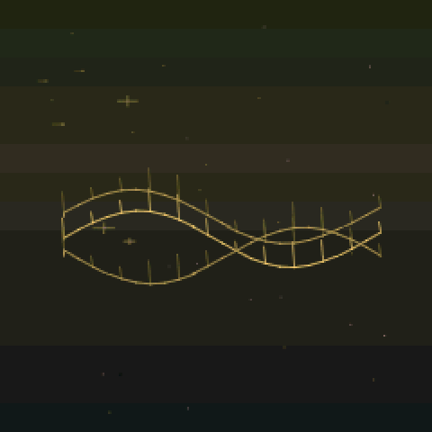
Aurora Polaris on the FM-1 (hardware, CF133B2D)
Steadier living meters
Under a dense load the display draws fewer frames per second. Before 2.3 the plants of the living views then fell more slowly as well. In 2.3 their levels fall by the clock, at the same speed at any frame rate. At normal frame rates nothing changes; the original design stays. 2.3 does not raise the frame rate.
A fresh wait for a late external clock
GLO > MIDI / Performance
With USB, TRS or BLE clock selected on MIDI / PERFORMANCE, PLAY waits for that clock. Without clock for two seconds, playback stops and releases its notes. Since 2.3 the next PLAY gives the clock a fresh two-second wait; a clock that starts late is then picked up. Mutable Dreams never switches to its internal clock on its own. Stop, choose Internal clock and press PLAY to play without an external clock. New in 2.4: while stopped, you may recall a saved User Biome with an externally selected USB, TRS or BLE clock. Saving and clearing a User Biome still require Internal clock.
Itinera always runs on the internal clock. External clock sync for dreams is not part of 2.4.
Screen reader announcements
While a reader listens, 2.4 keeps the announcements introduced in 2.3: a turned K1-K4 card with its value (for example 'K1 DENSITY 51'), the selected track and its voice, a new page or view with its title and four cards, and the result of a short button press when nothing else is said. Nothing is collected or sent while no reader listens. Use the word list that matches 2.4 (see 'Screen reader' under known limits).
The matching word list is unchanged (968fedaf29.json). The checks ran on the device and in the protocol; a complete test by a blind user is still open.
Saving the new sounds
Saving keeps every sound parameter. To stay readable by older Mutable Dreams versions, a saved patch marks new factory IDs as user settings. After loading, a track that used a new tone can therefore show as a user sound instead of its factory name; it sounds the same. Back up your banks, Favorites and the edited live Biome before every update.
Chapter 03
Walkthrough I - play a Biome
Follow along on the FM-1
1. Use headphones or the FM-1 speaker at a comfortable level. Under GLO / MIDI Performance set K1 to Internal. Under GLO / USB Audio turn K1 right if local audio is muted.
2. Press HOME until BIOMES appears. Set K1 to All. Find Saltglass Drift with K2 or PRESET and press SEL. If the change guard opens, cancel with HOME and save work you want to keep before retrying.
3. Press PLAY, then HOME to reach Live Atlas. Set Density lower until there is space between notes. Turn Colour left a little, then raise Space. Wait several beats for the texture to settle.
4. Press HOME to reach Tracks. Turn SELECT to choose the first active track, then play a note on the keys. Press SEL once to hear the arrangement without that track. Press SEL again to bring it back.
5. Press ARP to lock the current random seed. Listen to how tracks with different lengths continue to cross. Use REC on the Atlas to try a variation. ENV returns to the previous one.
What you should hear
The transport keeps playing the same Biome. The events and their interaction keep changing. For a Biome that changes sections by itself, load Pearl Fern and listen to both parts before coming back here.
Chapter 04
Walkthrough - make an evolving melody
From Blank to an open-ended pattern
An enabled step sequence intentionally repeats the notes you wrote. To develop it, use Flow's generator and the Phrase Tools, or edit probability, conditions and lengths. Motion alone is not a command to rewrite a programmed melody.
Generative does not mean that no note or motif ever repeats. The aim is a musical changing relationship between parts. Save an inspiring result before making a larger variation.
1. Stop PLAY. Open HOME > Live List and load row 00 Blank. Choose track 1 with SELECT, turn ALGO to Velvet Keys and raise SOUND K4 Level gently.
2. On GLO > Harmony, choose a root and a scale, for example C Dorian. Leave Journey Arrange Off for this exercise.
3. On SEQUENCE / 32 STEPS, set the sequence to Off so fixed programmed notes do not mask the generative route. On BASS / MOTIFS choose Euclid and a motif.
4. On RHYTHM, try 5 hits over 13 steps, rotation 0 and probability around 80%. On MIX / NOTES choose a comfortable base note. Start PLAY.
5. Return to Live Atlas. Raise Motion and Density a little at a time. Compare ARP locked and unlocked. REC offers a new variation; ENV returns to the preceding one.
6. Add track 2 with a contrasting sound, 3 hits over 11 steps, a different clock division and a lower level. Different cycle lengths make their relationship unfold.
7. Use a small room send on the HOME mixer. Listen for the dry attacks as well as the tail. Stop and save the whole patch to an empty User Biome slot.
Chapter 05
Walkthrough II - write a part
Turn a sound into a loop
1. Stop PLAY. Choose a synth track with SELECT. From a non-SEQ page, tap SEQ to enter Rhythm. Keep tapping until SEQUENCE / 32 STEPS. Set K1 to On and K4 to 12. Set K2 to step 1.
2. Tap REC until Step entry is active. Play four notes on the built-in keys. Use K2 to move to an empty step and enter another note. Tap REC through Live to Off.
3. Tap SEQ to Step / Expression. Raise velocity for one accent. Lower the gate on one step to make it short. Use chance below 100% on a single step. Press PLAY and let the 12-step line turn against another track.
4. To put a fill on the next bar, continue through SEQ to the Grid, Phrase Tools and Step Rules. Choose a synth track and step with K1 and K2. Set K3 to Fill Only, then press SEL while playing.
5. Open EDIT / Global Mixer and send a little of the chosen track to reverb with K4. On FX / Shared Space, set the return and tail. If the new part masks the rest, lower the track level before raising the effect.
What you should hear
The recorded notes repeat at your own length. The fill step appears for one queued bar. A small room send connects the tracks while their dry attacks stay audible.
Chapter 06
Walkthrough III - finish a take
Arrange, keep and record what you made
1. Stop PLAY. From Step Rules, tap SEQ for Journey Arrange. Set K1 to Loop, K4 to 2 sections. Set section 1 to THIS BIOME. In section 2, choose a complementary factory Biome.
2. On Journey Timing set each section to four bars and one repeat. On Journey Anchors select section 2 and carry the voice you recorded. Press PLAY and listen for it to survive the change. Set Arrange to Off at any time with transport stopped if you want one evolving Biome instead.
3. Stop. From HOME Tracks open GLO / User Banks. Use K2 to select Biomes and K1 to choose an empty slot. Use K4 and PRESET to enter a name, then SAVE. Turn K3 right to recall it after any later edit.
4. Connect USB to your computer. In your 44.1 kHz DAW project set the FM-1 as input. Arm inputs 1-2 for the complete mix. For individual voices arm six mono tracks on inputs 3-8. Record at least two Journey sections.
5. Open the Live Device Editor and export both the current patch JSON and the saved .mddb banks. Verify your new slot can be recalled before you install another firmware.
What you should hear
The recording preserves the full piece on the stereo track. The six mono tracks give you independent sources for the mix. If you used Rack Mode, the kit is on input 6 and inputs 7 and 8 are silent.
Chapter 07
Home and performance
LIVE ATLAS / 2.4
HOME
K1 Density · K2 Motion · K3 Colour · K4 Space
Density changes how often generated events occur. Motion changes melodic movement; it does not rewrite fixed notes you entered in an enabled step sequence. Colour changes brightness and Space raises the shared granular return. Let a change settle before turning the next macro.
HOME cycles Live Atlas, Large Tracks, Biome Browser, Live List and Biome Stage. PLAY starts/stops; SELECT chooses the track; SEL mutes that track on the Atlas. MASTER controls the physical output and the stereo USB mix.
Turn SELECT to select a track. K1 changes its level, K2 its granular send and K3 its room/reverb send. K4 changes playing-strength response on supported voices such as Willow Bow, Aero Flute and Felt Mallet. Mute with SEL; muted voices dim.
EDIT from Large Tracks opens Voice Detail. HOME from Voice Detail returns here. GLO from a non-Atlas HOME view opens User Banks. Changes to the musical patch need a Biome or project save; Touch and other preferences need SAVE while stopped with Internal clock.
BIOME BROWSER
HOME
K1 family or Favorites · K2 or PRESET Biome · SEL load · REC favorite
Browsing lets you inspect candidates. The change guard asks before discarding unsaved edits. SEL confirms, HOME cancels, and SAVE takes you toward saving. Stop and SAVE to retain favorites. PRESET from the Atlas is also a Biome shortcut.
Make and undo variations
ARP locks or unlocks the random seed. Tap REC on the Atlas to vary the patch. ENV returns to the previous variation. Stop leaves effect tails to decay. REC on System or MIDI / Performance is Panic and clears notes and tails. REC has other roles on recording, bank and mapping screens.
LIVE LIST
HOME > Live List
K1 List / Tones / Starred · K2 or PRESET row · K3 row content · SEL load
There are 16 ordered positions, 01-16, plus permanent row 00 for Blank. K3 assigns a User Biome slot, factory Biome or an empty row. The list is a set of references: it does not store a new copy of your edited sound. Save custom work into User Banks first.
REC on an empty row puts the currently loaded factory/User Biome there. REC on a filled row clears that reference; it does not erase the underlying Biome. SEL loads the chosen row through the existing unsaved-edit guard. HOME cancels that guard; SEL discards unsaved edits and loads.
With transport stopped and Internal clock, SAVE on this view stores the list and favourites as preferences. It does not replace the saved project.
TONE LIST / STARRED
HOME > Live List > K1 Tones / Starred
K1 Tones or Starred · K2 or PRESET browse · REC star · SEL apply
Browse all 664 tones by name. The twelve tones added in 2.3 (numbers 641-652) and the twelve additional 2.4 Warm Voices are included. REC adds/removes a star. The Starred mode filters the list. SEL applies the highlighted tone to the selected synth track; SELECT still chooses that track. A kit lane cannot receive a synth tone.
Tone stars and Biome favourites are separate. Stop and SAVE from this view to retain stars. Saving stars is not saving the edited composition.
BIOME STAGE
HOME > Biome Stage
The fifth HOME view expands the current Biome into a full-screen botanical stage without numeric clutter. The music remains playable. HOME continues the view cycle; ordinary track and macro controls still affect the instrument. This is distinct from the long-form Itinera dream.
Chapter 08
Shape and mix voices
SOUND
EDIT
K1 Tone · K2 Harmonics · K3 Shape or Decay · K4 Level
Select a voice, then turn ALGO for its synthesis model or PRESET for a Tone. Tone and Harmonics shape colour and overtones. Shape controls the character of models that offer it. Drum models use Decay. The on-device help changes for several models.
A larger view of one selected voice: its engine, tone and filter are easier to read. SELECT changes the voice, ALGO changes the engine and PRESET chooses a tone. K3 uses Shape for envelope-equipped voices and Elements, and Decay for other percussion. HOME returns to Large Tracks.
Low-pass modes LP12 and LP24 soften brightness. LPG darkens as the sound decays. Off bypasses the filter. Breathe adds slow filter movement. Start with little resonance on bright sounds.
Attack controls the onset and Decay controls the tail. Melodic voices can sustain from MIDI. Percussive models also shape the tail internally. Increase Attack on pads and lower it on plucks.
MIX / NOTES
EDIT
K1 Granular send · K2 Base note · K3 Pan · K4 Clock division
Set the voice position in stereo and its pitch centre. The division slows the selected voice independently. The granular send feeds the shared buffer.
Turn SELECT to move between tracks. SEL mutes or unmutes the selection. Sends follow the voice level. The shared effects also need an audible return on their own pages.
Hear a sound in its space: mute the other tracks with SEL, then compare the same phrase dry (K3 and K4 at 0), with K4 Reverb send, with K3 Delay send and with both. SHARED SPACE sets the echo time and feedback, the room tail and the return for all tracks. These are the existing effects. 2.4 adds four optional effects, all off by default: AIR (high-passed, level-sensitive noise above 7 kHz), Chorus (slow, above 250 Hz), Width (side widening; the mono sum is preserved) and Vintage (gentle voice pitch drift). 2.4 adds no Shimmer reverb. LevelMatch is on by default for factory Biomes except Blank, not for User Biomes.
The Euclidean generator distributes hits through the pattern. Length sets the cycle. Rotation moves accents around it. Probability makes eligible hits intermittent. Try five hits over twelve steps against a sixteen-step track.
Swing delays alternate subdivisions. Ratchets divide one hit into one to four repeats. Accent changes its emphasis. The division belongs to the selected track.
BASS / MOTIFS
SEQ
K1 Off / Euclid / Step · K2 Motif · K3 Glide · K4 Base note
Use Euclid to play the motif with generated hits. Step lets the phrase drive playback. Glide smooths the movement between pitches. Any synth voice can use this mode.
PHRASE / NOTES
SEQ
K1 Phrase step · K2 Note offset or rest · K3 Accent · K4 Probability
Edit one of sixteen phrase positions. A rest leaves the position empty. Scale snapping still applies. This page sets the track's accent and probability. Use Step Expression for per-step dynamics in the 32-step sequencer.
Each synth track has its own sequence. The display shows a rest at the bottom of the note selector. Tap REC to cycle Step entry, Live overdub and Off. In Step, play the keyboard or routed MIDI to enter notes. In Live, start PLAY and play into the moving sequence.
STEP / EXPRESSION
SEQ
K1 Velocity · K2 Gate · K3 Chance · K4 Generator
Velocity changes emphasis. Gate changes duration. Chance governs the selected step. Generator choices such as Sparse, Arp, Pulse and Drift replace this track's sequence. ENV can undo the edit.
Try Forward, Reverse, Pendulum, Orbit or Seed. Offset changes which step is heard first while keeping the stored order. Feel adds velocity variation. REC enters the sounding step while live recording.
SEQUENCER / GRID
SEQ
K1 Track · K2 Step · K3 Note or kit pad · K4 Length
Compare the six rows, then press SEL to open the selected track's editor. REC cycles recording. In Rack Mode, the kit row opens its pad sequencer. Tap SEQ again for Phrase Tools.
Chapter 11
Phrase edits, fills and harmony
SEQUENCER / TOOLS
SEQ
K1 Step or Phrase · K2 Position · K3 Amount · K4 Action
Set the scope before choosing an action. Copy and Paste transfer the chosen scope between synth tracks. Transpose shifts pitches. Phrase scope adds Reverse, Accent and Articulate to change order, velocity and gate lengths. Open a track before recording. Press SEL to apply the chosen tool and ENV to undo the last operation.
SEQUENCER / FILL
SEQ
K1 Track · K2 Step · K3 Rule · K4 Note
Rules decide which passes can play the step, including First, Every second and Fill. During playback press SEL to queue a single fill bar. Press SEL again before it starts to cancel it. Fill steps play only inside that bar.
HARMONY / GLOBAL
GLO > Harmony
K1 Root · K2 Scale · K3 Transpose · K4 Tempo
Root and scale choose the pitch pool. Transpose moves the whole patch; tempo sets the internal BPM. External clock can drive transport independently of this BPM.
SEL toggles KEEP SETTING for manual Biome selection: retain key, scale, transpose, tempo and chords while loading the new Biome's sounds, rhythm and space. This is not a command to rewrite the harmonic story of every Itinera or Journey.
REC cycles BIOME CHANGE: NOW, NEXT BAR or TRACK BY TRACK. NOW changes immediately and clears effect memory as before. The other modes keep reverb, echo, grain and tape tails. The handover order is pads/bass, leads, rhythm; stages may combine when a mixed old/new ensemble would exceed the device budget. Individual per-track fade times are not available.
Stop, select Internal clock and SAVE to retain these preferences together with the normal saved project. With the transport stopped, a manually selected Biome loads directly.
CHORD JOURNEY
GLO
K1 Progression · K2 Bars per chord · K3 Follow or Stay · K4 Root movement
Pick a four-chord progression and allow one to sixteen bars for each chord. Set Follow on the selected voice to move it with the chords. Use Stay on percussion or a held drone. K4 switches the root movement between Nearby and Original. Set the root and scale on Harmony. This progression works with Journey Arrange Off.
Chapter 12
Itinera - take and shape a dream
Choose before you play
HOME / GLO cycle > Dreams (Itinera)
K1 Dream · K2 Length · K3 Pace · K4 Room
Stop transport and tap HOME until Dreams appears, or reach Itinera through the GLO cycle (a long hold of HOME now opens help). Choose among 25 dreams, 11 of them new in 2.4. Somnium Meum / MY DREAM draws on at least four playable starred Biomes; Blank is excluded, and without enough starred Biomes an explicit fallback is used. Length offers 30 minutes, 1 hour, 2 hours or 4 hours. Pace changes how often the journey moves; Room shapes its space. REC resets the current dream's adjustments. A four-digit Dream code 0000 chooses a fresh code. The same firmware version, settings and code repeat the musical structure; a bit-identical recording is not promised.
Turn Motion on under LOOK / STARTUP for animated worlds. Press PLAY to begin. Length is the journey duration, not a guarantee that an attached computer/radio service will remain online.
Play during the dream
K1 Density · K2 Motion · K3 Colour · K4 Space
Once running, the knobs change role. They shape the current dream on top of its own development, and that nudge remains through later Biomes until you stop. A brief overlay shows the change. The screen identifies the Biome you hear.
A short PLAY stops the dream. A short SEL ends the journey while keeping the sounding Biome playing. A long hold of PLAY or SEL during a dream opens help without performing either short action. After SEL you can edit the Biome, star it or save it. ENV brings back the project from before the dream. To store the kept result, stop playback, choose Internal clock and save a full User Biome.
Itinera uses the internal clock even when an external clock is selected. Following an external clock during a dream is a community request and not part of 2.4.
Listen and look
Expect slow changes in texture, notes and space, not a fixed song file. The same dream may revisit musical material. Each theme has its own visual story. Graphic Motion can be turned off without removing the sound design.
The Mac Radio Studio and OBS are separate products. Starting a hardware dream does not automatically publish a stream.
Added in 2.3 and still present in 2.4: Terra Pluvia and Aurora Polaris follow the music. In Terra Pluvia each of the six tracks lands as its own kind of ring on its own stretch of the river; in Aurora Polaris three ribbons belong to two tracks each, lift slowly with higher notes and light a short curtain at the pitch of each note. The falling rain and the stars stay ambient. The sound is never delayed for the picture.
Chapter 13
Arrange a Journey
JOURNEY / ARRANGE
SEQ
K1 Off / Once / Loop · K2 Section · K3 Biome · K4 Section count
Stop playback to edit. Choose up to eight sections. THIS BIOME takes its source from the current saved sounds. Other positions can recall factory Biomes. PLAY starts the first section. Once finishes after the last section. Loop returns to the start.
Set one to sixty-four bars per section. A bar is sixteen sixteenth notes. Repeats extend that section. The pitch offset is ±24 semitones. All sections follow the home tempo.
Carry preserves the selected incoming voice and its pattern. The new root and scale still apply. Across kit changes, only tracks 1-3 can be carried. Live mutes and macros reset on Stop.
Reproduce the factory example
Load Pearl Fern, press PLAY and hear Hands Into Clouds enter while track 5 carries the bass. Pearl Fern, Chapel of Fog and Copper Step ship with Loop. The other 277 factory entries, including Blank and the four Bloom Studies, ship with Off. Save any preference and section edits to a User Biome.
Chapter 14
Granular and spatial effects
GRANULAR BUS
FX
K1 Return / Space · K2 Grain size · K3 Position · K4 Feedback
This is one shared audio buffer. A track send changes how much of that track goes in. Size changes each fragment's length, Position chooses where to read, and Feedback recirculates material. Press LFO to freeze, then press it again to resume input.
Transpose the grains by up to two octaves and choose forward or reverse playback. Ducking reduces the other tracks when the chosen source plays. Choose 0 to turn the duck source off. Set its release in System.
The delay spans 40-350 ms. Feedback adds repeats. Reverb tail controls decay. Use the Mixer to choose which voices feed delay or reverb. Start low and raise the return gradually.
Add a little noise to the shared buffer for texture. The selected track's send remains separate. Freeze holds the recorded buffer and stops new noise and track inputs from entering.
Marbles adds remembered variation to phrases in Euclid or Step. Tides moves the selected LFO A target. Warps blends nonlinear colour. Start with one low-depth change to hear each contribution. These are existing functions; 2.4 adds no new whole Clouds, Warps, Marbles or Tides module.
TIDAL / LFO A
FX
K1 Target · K2 Wave · K3 Depth · K4 Cycle
Assign slow movement to a synth voice. Try a soft swell on level or gentle motion on pan or filter. The cycle spans 0.5-20 seconds. Grain, FX and Warps targets need the corresponding base signal.
TIDAL / LFO B
FX
K1 Target · K2 Wave · K3 Depth · K4 Cycle
Set an independent movement for the same voice. Use a different cycle from A to avoid repeating the same motion together. Soft Swell keeps the peak within the original level. Kit pads use their own controls.
Set up one of four connections. For example, choose a percussion track as the source, a sustained track as destination and Pan as target.
LINK / MOTION
FX
K1 Slot · K2 Signal · K3 Signed depth · K4 Hit release
Select Hit, Envelope or LFO A/B from the source. Raise depth from zero and listen. Negative depth reverses motion. Hit release sets how quickly a hit fades from the destination. Muted sources stop sending motion.
Chapter 16
Drift and lo-fi kits
BIOME / DRIFT
FX
K1 Off / Manual / Auto · K2 Position · K3 Cycle · K4 Depth
Drift blends captured sound parameters from A to B. In Manual, move K2. In Auto, set a 10-300 second round trip. Lower depth for a smaller change. Capture both scenes first.
DRIFT / SCENES
FX
K1 Capture A · K2 Capture B · K3 Depth · K4 Mode
Turn Drift Off. Capture A, change tone, filter, decay, mix or macros, and capture B. Turn Drift on afterwards. ENV can undo the last capture.
LO-FI / RACK MODE
GLO
K1 Rack mode · K2 Kit · K3 Pad · K4 Hiss
Rack mode provides three synths and an eight-pad kit on track 4. Play its pads on the keyboard. The eight pads repeat across the keys. REC auditions the selected pad from kit edit screens.
KIT / PAD COLOUR
EDIT (track 4)
K1 Tune · K2 Level · K3 Filter · K4 Tail
Set pad pitch up to ±12 semitones. Adjust the selected pad's level, low-pass filter and sample decay. Each pad stores independent settings.
KIT / SENDS
EDIT (track 4)
K1 Pad · K2 Pad granular send · K3 Kit delay · K4 Kit reverb
The pad feeds the same granular tape as the synths. Track 4's Mixer send sets the overall kit contribution. Delay and reverb sends apply to the kit.
KIT / 32 STEPS
SEQ (track 4)
K1 Step · K2 Hit · K3 Length · K4 Generator
Choose the pad with PRESET. Each pad has its own rhythm gates. REC cycles step entry, live overdub and Off. Save the full Biome to keep the kit and patterns.
Chapter 17
System and MIDI
QUALITY / SYSTEM
GLO
K1 Tempo · K2 ECO / FULL · K3 Duck release · K4 Reset peak
ECO uses lighter processing on dense sounds. FULL allows more resonator modes and grains. The CPU display shows the observed peak. REC is Panic. System shares its tempo with Harmony.
Motion controls display and light movement. K2 toggles the startup chime, K3 replays the animation, and K4 selects OFF, DIM or FLOW for button lighting. SEL switches colour polarity. Stop and SAVE to keep preferences.
Since 2.3: with an external clock selected, PLAY waits for that clock. If no clock arrives within two seconds, playback stops and releases its notes. Pressing PLAY again gives the clock a fresh two-second wait, so a clock that starts late is picked up. Mutable Dreams never switches to its own clock on its own. An external Stop ends all notes. New in 2.4: a stopped saved User Biome can be recalled with the external clock selected; saving and clearing still need Internal clock.
Select Internal, USB, TRS or BLE clock. An external source must send MIDI Clock and Start. Set the selected track's receive channel to Off or 1-16 with K3. Input scale snapping constrains played notes. CH16 CC16-19 can control the four macros.
Since 2.2, PRESET sets the selected synth track's generated USB MIDI note-output channel: Off or 1-16. Repeat for each track and SAVE while stopped with Internal clock. Assign different channels when controlling separate instruments. In 2.4, recalling a saved User Biome with an external clock selected preserves the MIDI input channels, note outputs, mappings and the clock selection.
This output is monophonic per synth track and carries generated notes. The Lo-Fi kit, notes played into the keyboard/MIDI input, clock output and BLE/TRS note output are outside this feature. Stop, mute, Panic, clock changes and Biome changes must release held notes.
MIDI channels are control messages, not separate audio outputs. USB audio inputs 3-8 are the six mono voices.
Stop before enabling the radio. To connect to a BLE MIDI peripheral, turn K2 to scan or browse, then K3 right to connect. For a phone or computer connecting to the FM-1, leave discovery mode and use its Bluetooth MIDI panel. Enable thru only when routing is intentional to avoid MIDI loops.
Chapter 18
MIDI Learn and recordings
MIDI / LEARN
GLO
K1 Slot · K2 Target · K3 Track · K4 Arm
Choose a slot, then turn K4 right and move a controller. Cross the current value to pick it up without a jump. REC clears the selected slot. Stop and SAVE to store the sixteen mappings.
MIDI / MAPPING
GLO
K1 Port · K2 Channel · K3 CC · K4 Enable
Restrict the mapping to USB, BLE, TRS or Any. Channel 0 means Any. Reserved CCs are skipped. Disable a mapping to preserve it without using it, or press REC to clear it.
USB AUDIO
GLO
K1 Local monitoring
Turn K1 left to mute speaker and headphones or right to restore them. USB recording continues. MASTER sets the stereo USB level. SAVE on this page keeps the preference with transport stopped and Internal clock selected.
Record six separate tracks in Logic or another DAW
Choose Mutable Dreams FM-1 as input and set the project to 44.1 kHz. Create six mono audio tracks, one each on inputs 3-8. Enable recording on all six, press PLAY and record. Inputs 1-2 give the effected stereo mix. The mono tracks are taken before pan and shared effects and use a fixed USB level. With Rack Mode on, input 6 carries the kit and inputs 7-8 are silent. Set MIDI input channels separately when using the FM-1 as a controller.
Stop transport. Saving and clearing need Internal clock; recalling does not (see below). Pick one of sixteen Biome slots or sixty-four sound slots. K4 moves the cursor and PRESET changes its character. SAVE stores to an empty slot. On an occupied slot, check the prompt and confirm with SEL to overwrite. REC requests clear and SEL confirms. Turn K3 right to recall; with the transport stopped this is also allowed when a USB, TRS or BLE clock is selected externally. The factory library of 300 entries including Blank remains available.
Browser instrument and live editing
Historical 2.3 description: open the 2.3 Web Studio in desktop Chrome or Edge. Start Instrument opens the independent browser synth. Use browser user banks for its own local storage. To edit the FM-1 instead, stop the standalone instrument, click Connect FM-1, allow MIDI and choose the device. The device editor sends changes to the FM-1. Disconnect when finished. This guide does not verify that the Web Studio carries the 2.4 additions.
Historical 2.3 description: the 2.3 Web Studio runs the 2.3 firmware engine and library, including the Bloom Studies and the twelve 2.3 tones (641-652). Whether it contains the 2.4 tones, Biomes, Dreams and effects is not verified here; compare the tone and Biome counts with your FM-1 before relying on it. Use the black-and-mint Your FM-1 surface to follow the physical controls. The separate Global Editor has direct controls independent of the current HOME subview. Browser bank storage and physical FM-1 banks remain separate. The website radio pauses when you play the instrument; press Listen to return to the radio.
Export, import, back up and restore
Export the live patch as JSON for edits and transfer of the active sound. Use the editor's import to load a compatible patch, then save it to the desired bank on the hardware. Use Back up all device banks for a .mddb file. Restore device banks checks and stages the file, then waits for SEL on the FM-1. HOME cancels the device prompt. A full restore replaces the stored user data, so back up the destination device first.
USB Screen Mirror
Open the mirror page in Chrome or Edge, connect with a data USB cable and grant Web MIDI. Choose the FM-1. Use the mirrored image as a window source in OBS and take audio from the device or DAW. If a transfer stalls, close the mirror and retry with the editor alone.
Chapter 20
Install, recover and diagnose
Before updating / Vor dem Update
Back up Favorites & personal Biomes.
Updating can erase your Favorites and personal / User Biomes. Back up all device banks as .mddb, export your edited live Biome separately and make a note of your Favorites before installing. Restore your Biomes after the update.
Beim Update können Favoriten und persönliche Biomes verloren gehen. Sichere vor der Installation deine User-Bänke und das bearbeitete Live-Biome. Notiere zusätzlich deine Favoriten und stelle deine Biomes nach dem Update wieder her.
Save a .mddb bank backup and a separate JSON of the live patch. Keep the official stock firmware for your specific FM-1. Use a direct USB data connection and leave power connected until the installer confirms restart. Check the release page for the current UC25HQ80 test status. The SMK-37 version uses a separate build.
Browser installer, command line and M-UPGRADE
Use only the installer and package supplied with this 2.4 release, in desktop Chrome or Edge as its instructions direct. Grant MIDI and select the FM-1. Follow its update and restart prompts. Earlier releases supplied a Python USB-MIDI updater and M-UPGRADE for supported official stock files; use such tools only if the 2.4 download supplies them, and follow the instructions supplied with each download.
Use the matching 2.4 installer and package: qualified normal build 8FBE5AF8, application identity FM-1_710020400 (source commit 978562abab66f4c817c226c9adc8329a5c108ad1). Before any update or downgrade, back up the saved banks and the edited live Biome separately. Confirm that the package identity and build match before writing. 2.4 projects use wire format version 12 (2604 bytes). Projects that use the new routes 7 and 8 or GRIDS generator 4 are rejected by 2.3 and are not automatically compatible with it. The earlier tested 2.3 update and return paths under 'Your instrument, this build' are historical evidence for build CF133B2D (identity FM-1_710020300). They do not show that every historical update route works on 8FBE5AF8, and a physical, fully power-disconnected cold start of 8FBE5AF8 is not claimed.
Return to stock and restore
Choose the installer's stock-return route and the official stock file that works on that unit. Returning to stock can erase saved Mutable Dreams data. After reinstalling a compatible Mutable Dreams build, restore .mddb via the Live Device Editor and press SEL on the FM-1. Recall a known User Biome to check the restore.
Troubleshoot by symptom
No sound: turn up MASTER, use Internal clock (or make sure your external clock is running), unmute the chosen voice and turn on local monitoring. Sound stops by itself or the screen is dim: check the LOOK sleep timer and Night mode (REC cycles the LOOK pages). Long hold opens a help page instead of the usual action: this is intended; the next tap closes it. Unexpected section changes: check Journey Arrange. No MIDI device: try a data cable, allow MIDI, close other editor or mirror sessions and reconnect. Stereo only in the DAW: select separate mono inputs 3-8. Startup click: switch off the optional chime in Look / Startup and compare speaker and headphones after powering on. A click at the power switch can come from the analogue circuit.
Chapter 21
Sound engines and scale choices
Choose a sound by how you want to play it
Start with Felt Mallet for a soft strike, Bow or Aero for sustained voices, and Skin Percussion for hand percussion. Use ALGO to change the selected voice's engine. PRESET changes its Tone. The next section groups the algorithms by musical use. Hold EDIT on Sound to see that engine's knob roles.
Play in a different scale
Harmony offers Chromatic, Minor, Major, Dorian, Minor Pentatonic, Major Pentatonic, Whole Tone, Phrygian, Ukrainian Dorian, Harmonic Minor, Double Harmonic Minor, Harmonic Major and Double Harmonic Major. Choose the root before shaping a chord progression. Try Ukrainian Dorian for a raised fourth against a minor third. Harmonic Minor adds a leading tone. Harmonic Major lowers the sixth against a major third.
A practical sound design pass
With effects low, audition a single voice at a modest level. Set its envelope, pitch, filter and pan. Raise just one send, listen in the full mix and make room for the next track. Save a Tone to reuse the voice and a Biome to preserve the whole mix.
Chapter 22
Engine reference
Percussion and strikes
PLAITS KICK makes a pitched low drum. PLAITS SNARE combines body and noise. PLAITS HAT makes short metallic ticks. SKIN PERCUSSION moves from palm to rim with Tone and Harmonics shaping the skin and its overtones. FELT MALLET softens the initial strike while its pitched body rings.
Resonators and strings
RINGS MODAL produces pitched, ringing partials. ELEMENTS STRIKE excites a resonating body with mallet, plectrum or particles. CEDAR STRING gives you a woody pluck with separate brightness, body and plectrum settings. WILLOW BOW sustains a string with bow pressure. COPPER BLOOM mixes ringing sidebands into a strike.
Oscillators and keys
PLAITS FM creates sidebands around a carrier. PLAITS VA covers classic oscillator colours. PLAITS HARMONIC balances a harmonic stack. SINE CHOIR layers gentle partials. ROUND BASS gives a soft low foundation. VELVET KEYS makes a rounded melodic attack. REED ORGAN adds pipe and reed harmonics, with gentle beating.
Pads, air and ensembles
MELLOW DRIFT makes a slowly moving soft voice. SATIN MORPH moves between smooth timbres. SPECTRAL BLOOM develops a spread of partials. BREATH TEXTURE adds airy noise. AERO FLUTE balances pipe overtones and breath. SILK ENSEMBLE spreads and drifts two side voices. VOWEL BLOOM sweeps through oo, ah and ee.
Chapter 23
MIDI messages and shortcuts
Performance messages
The assigned track accepts Note On/Off with velocity, Pitch Bend and CC64 sustain. CC11 controls expression. RPN 0,0 adjusts bend range up to ±24 semitones using CC6 and CC38. Reset All Controllers is CC121. CC120 silences the assigned voice and CC123 releases its notes. Keyboard and MIDI recording use the selected sequence and routed channel.
Direct control and recall
CC7 volume, CC10 pan, CC74 filter cutoff, CC71 resonance, CC91 reverb send, CC12 delay send, CC13 grain send and CC5 glide. On CH16 with the macro shortcut enabled, CC16-19 provide coarse Density, Motion, Colour and Space. Optional CC48-51 add fine resolution. Bank Select MSB CC0 plus Program Change selects a factory Tone for the routed track outside an active Journey. The slot index is bank × 128 + program. Use zero-based numbers as sent on the wire.
External timing and connection
Select USB, TRS or BLE in MIDI / Performance, then send Clock and Start, Continue or Stop over that input. Select Internal for standalone playback and saving. Enable BLE MIDI in Wireless MIDI before pairing. If notes double or hang, turn thru off, check channel assignments and use Panic on System or MIDI / Performance.
Navigation in one glance
HOME cycles Atlas, Tracks and Biomes. EDIT cycles sound shaping and mixing. SEQ cycles rhythm, patterns, tools and arrangement. FX cycles grain, spatial effects and movement. GLO cycles harmony, settings, MIDI, storage and Rack Mode. Holding a function key displays its help without applying the tap action.
Chapter 24
Operate the browser instrument
Start and play
Use Start instrument to enable audio, then Play for the transport. Try the featured starting points for Silk Estuary, Chapel of Fog, Cedar After Rain or a Lo-Fi kit. Choose a Biome in the Atlas, use Blank Biome for a clean start, and star favourites. Select a track in its list. The on-screen keys and the typing keys A W S E D R F G Y H U J play notes. OCT - and OCT + shift the range. Connect MIDI input brings in an external controller.
Use the panel while a pattern runs
Select an editor page and move its four controls. Use Tempo for the internal BPM and Master for overall level. SEL mutes the current track, ARP locks the seed, REC makes a variation and ENV undoes it. LFO freezes the granular buffer. Panic immediately releases notes and clears tails. Sound, rhythm, sequence, effects and motion controls follow the same roles listed in the device reference.
Save in the browser
Name and save to a free browser slot, load it later from the same browser, or clear a slot to reuse it. Use Export patch to save JSON independently of browser storage. Import patch reopens a compatible JSON. If a Biome change would discard edits, choose Keep editing, Open User Banks or Discard and load.
Use the FM-1 as the instrument
Choose Connect FM-1 to edit the actual unit. Back up all device banks exports .mddb and Restore device banks stages a replacement for confirmation on the synth. Return to browser releases the device. Use the dedicated mirror page to capture the physical display. The browser synth and device keep separate banks.
Chapter 25
Answers to community questions
Save seems to do nothing
Stop playback, select Internal clock, then open GLO / USER BANKS from HOME Tracks or Biomes. Choose Biomes with K2 and a User slot with K1. Set the name using K4 and PRESET. Press SAVE. If that slot is occupied, read the overwrite prompt and press SEL to confirm. Recall that slot with K3 and verify the name and sound. While stopped, recall also works with an external USB, TRS or BLE clock selected; the MIDI input channels, note outputs, mappings and clock selection are preserved. Saving and clearing still require Internal clock. LevelMatch is on by default for factory Biomes except Blank, not for User Biomes. A Tone save only keeps one sound; choose Biomes to save the whole composition. Back up saved banks and the edited live Biome before updating or restoring banks.
Can I overwrite or initialise a factory Biome?
Factory Biomes remain in the library. Edit one and save your own version to a User Biome slot. Start with Blank for a clean patch. User slots can be overwritten or cleared with the confirmation shown on the device. Live List gives them direct HOME access without modifying the factory ROM.
2.4 does not change this. Overwriting a factory Biome in place is still an open request (issue #4) and remains open; the Live List is a quicker way to reach your own versions, not a replacement for it.
Which kind of transition am I hearing?
Manual selection (since 2.2) uses the NOW / NEXT BAR / TRACK BY TRACK choice on Harmony. KEEP SETTING retains harmony and tempo for those manual changes. These controls are not the same as BIOME / DRIFT, which interpolates captured A/B sound settings.
Journey Arrange follows up to eight authored sections; Anchors can carry selected tracks across boundaries. Itinera is a separate long dream. With Journey Arrange Off, an ordinary Biome can still run generatively without a linear arrangement. The Mac Radio Studio is a separate program with its own mixing engine.
MIDI channels are not separate audio tracks
Record the stereo mix from USB inputs 1-2 and individual voices from mono inputs 3-8, at 44.1 kHz. Input MIDI channels distribute received notes to tracks. The MIDI-out channels (since 2.2) send generated synth notes to other instruments. These three routes are independent.
Does an update require a detour through stock V15?
Use the installer and starting-version instructions supplied with the exact release. Do not return to V15 merely because a previous update used it. First export the live patch and all User Banks, check the detected FM-1 identity and keep the appropriate stock package for that unit. If the installer explicitly reports that it refused the update before transferring data, that attempt did not write the package. A zero-requests message alone does not identify the cause or prove a damaged flash. Record the complete message and USB identity before trying another route.
Newer flash chips, recovery and accessibility
UC25HQ80 (ID 0xB36014) support exists in code, but real validation of 2.4 on that chip (installation, save, full cold boot and return) has not been done and is not claimed. The front logo or the purchase date does not tell which chip a unit has: check its flash ID. The 2.4 tests used the existing FM-1 with the Puya chip (ID 0x856014). The 2.3 tests also used a Puya unit.
m-bootloader by Julius Vitkauskas is a separate, optional recovery tool, not part of Mutable Dreams. Version 2.4 is not yet qualified on UC25HQ80. A replacement bootloader helps when an application is damaged; it is no guarantee against every fault. No update is ever risk-free.
Screen Reader: use the word list that matches 2.4. 968fedaf29.json is the word list of 2.3; do not assume it is unchanged for 2.4, and keep the older word files too. Check the word-list name and hash supplied with the 2.4 download. 2.4 keeps the 2.3 announcements (see 'Screen reader announcements'). A day-to-day usability test by a blind user from start to finish has not been newly claimed for 2.4, so issue #10 stays open.
What 2.4 does not claim
This guide describes FM-1 2.4, exact qualified normal build 8FBE5AF8, application identity FM-1_710020400. Everything from 2.3 is included, and with it everything from 2.2: Live List, tone stars, the HOME mixer, Voice Detail, Biome Stage, Itinera with its macros and SEL keep, the Bloom Studies, the music-following dream pictures, steadier living meters, the fresh external-clock wait and the screen-reader announcements. New in 2.4 are twelve additional Warm Voices (664 tones), twenty additional musical Biomes (300 factory entries including Blank), eleven additional Dreams (25), four optional effects, Grain LFO targets, a fourth GRIDS Kit generator, slower internal tempo ranges, LOOK controls, help on every long hold, menu switching, external-clock recall of saved User Biomes and real audio work on both processor cores.
Not part of 2.4: a Shimmer reverb, external sampling, USB disk mode, a new whole Clouds, Warps, Marbles or Tides module, a new synthesis engine (the six freely assigned synth tracks and 24 sound models are retained), MY CHORDS (still deferred), external clock sync for Itinera dreams, and overwriting factory Biomes in place. The four optional effects are the only new effects. Both processor cores now do real audio work (ordered mix and eligible Satin/Spectral oscillator jobs), but no universal doubling of capacity and no first-firmware claim is made. The Live List does not fulfil the request to overwrite factory Biomes.
652 tones · 280 Biome entries including Blank · 24 sound models · six freely assignable tracks
Audio headroom
Four 180-second device tests with USB audio, MIDI and screen mirror: dense ECO 13.59 %, ECO with reader 12.61 %, FULL with reader 22.07 %, new worst-case FULL 18.57 %. No new audio or USB errors, no quality reduction. Measured on one FM-1; not a guarantee for every possible combination.
Update and return
13 installation legs on the device: return trips between 2.3 and Mutable Dreams 1.5, 2.0, 2.1, 2.2 and the private reader build (10 legs), one classic 2.3 installation, and original V15 there and back (2 legs). All Mutable Dreams bank objects were byte-identical every time.
Original V15
V15 uses a different storage format: returning from it needs the bank restore, confirmed with SEL on the FM-1. Afterwards all 22 saved objects, the unsaved live project, the UI and the saved MIDI routing were restored exactly, and an application restart was checked.
Not tested in this round
A fresh cold start with power fully disconnected; the exact UC25HQ80 chip and bootloader; Logic (USB MIDI channels were captured directly); the analog line output; a four-hour hardware run (the long dream run was an accelerated host simulation); a complete test by a blind screen-reader user.
The complete instrument
All 46 hardware pages.
Illustrations: the existing reference illustrations are simulator captures from the frozen 2.3 source (CF133B2D code) and are labelled 2.3. They remain valid only for controls that 2.4 did not change. New 2.4 hardware illustrations for changed controls are supplied separately.
Reference illustration from 2.3 for retained controls; see the 2.4 chapter for changed operation.
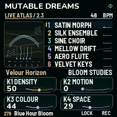
01 / LIVE ATLAS / 2.4
Reference illustration from 2.3 for retained controls; see the 2.4 chapter for changed operation.
02 / SOUND
Reference illustration from 2.3 for retained controls; see the 2.4 chapter for changed operation.
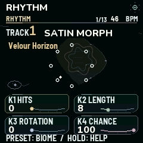
03 / RHYTHM
Reference illustration from 2.3 for retained controls; see the 2.4 chapter for changed operation.
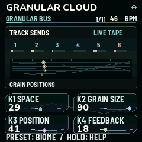
04 / GRANULAR BUS
Reference illustration from 2.3 for retained controls; see the 2.4 chapter for changed operation.
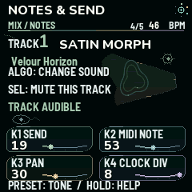
05 / MIX / NOTES
Reference illustration from 2.3 for retained controls; see the 2.4 chapter for changed operation.
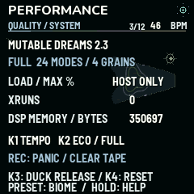
06 / QUALITY / SYSTEM
Reference illustration from 2.3 for retained controls; see the 2.4 chapter for changed operation.
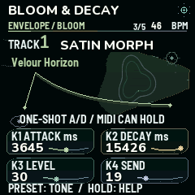
07 / ENVELOPE / BLOOM
Reference illustration from 2.3 for retained controls; see the 2.4 chapter for changed operation.
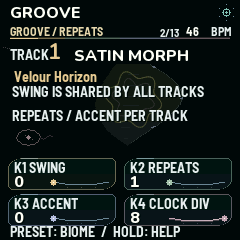
08 / GROOVE / REPEATS
Reference illustration from 2.3 for retained controls; see the 2.4 chapter for changed operation.
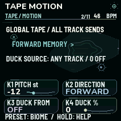
09 / TAPE / MOTION
Reference illustration from 2.3 for retained controls; see the 2.4 chapter for changed operation.
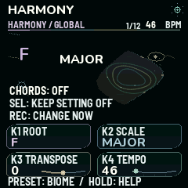
10 / HARMONY / GLOBAL
Reference illustration from 2.3 for retained controls; see the 2.4 chapter for changed operation.
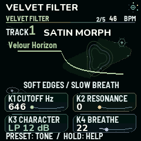
11 / VELVET FILTER
Reference illustration from 2.3 for retained controls; see the 2.4 chapter for changed operation.
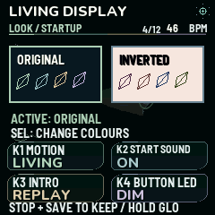
12 / LOOK / STARTUP
Reference illustration from 2.3 for retained controls; see the 2.4 chapter for changed operation.
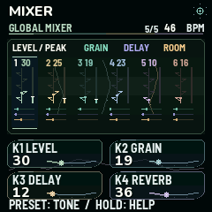
13 / GLOBAL MIXER
Reference illustration from 2.3 for retained controls; see the 2.4 chapter for changed operation.
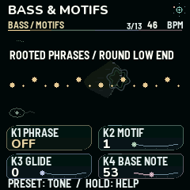
14 / BASS / MOTIFS
Reference illustration from 2.3 for retained controls; see the 2.4 chapter for changed operation.
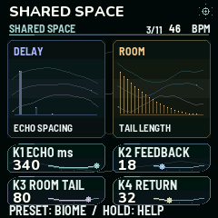
15 / SHARED SPACE
Reference illustration from 2.3 for retained controls; see the 2.4 chapter for changed operation.
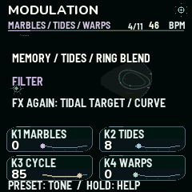
16 / MARBLES / TIDES / WARPS
Reference illustration from 2.3 for retained controls; see the 2.4 chapter for changed operation.
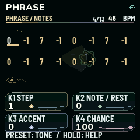
17 / PHRASE / NOTES
Reference illustration from 2.3 for retained controls; see the 2.4 chapter for changed operation.
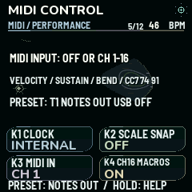
18 / MIDI / PERFORMANCE
Reference illustration from 2.3 for retained controls; see the 2.4 chapter for changed operation.
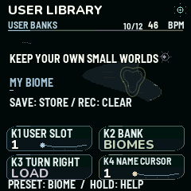
19 / USER BANKS
Reference illustration from 2.3 for retained controls; see the 2.4 chapter for changed operation.
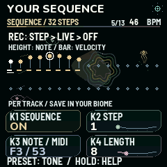
20 / SEQUENCE / 32 STEPS
Reference illustration from 2.3 for retained controls; see the 2.4 chapter for changed operation.
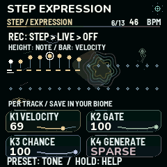
21 / STEP / EXPRESSION
Reference illustration from 2.3 for retained controls; see the 2.4 chapter for changed operation.
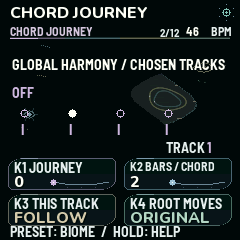
22 / CHORD JOURNEY
Reference illustration from 2.3 for retained controls; see the 2.4 chapter for changed operation.
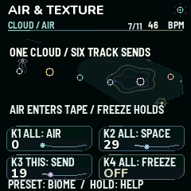
23 / CLOUD / AIR
Reference illustration from 2.3 for retained controls; see the 2.4 chapter for changed operation.
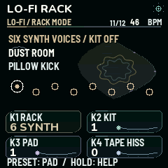
24 / LO-FI / RACK MODE
Reference illustration from 2.3 for retained controls; see the 2.4 chapter for changed operation.
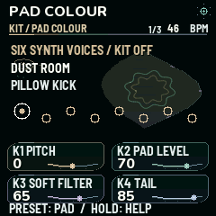
25 / KIT / PAD COLOUR
Reference illustration from 2.3 for retained controls; see the 2.4 chapter for changed operation.
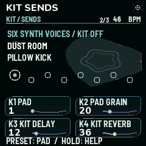
26 / KIT / SENDS
Reference illustration from 2.3 for retained controls; see the 2.4 chapter for changed operation.
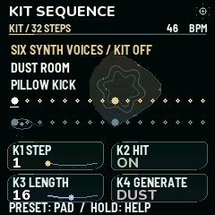
27 / KIT / 32 STEPS
Reference illustration from 2.3 for retained controls; see the 2.4 chapter for changed operation.
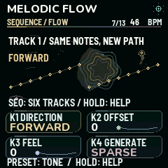
28 / SEQUENCE / FLOW
Reference illustration from 2.3 for retained controls; see the 2.4 chapter for changed operation.
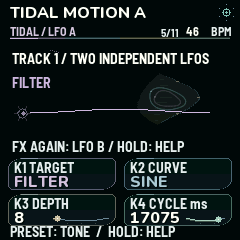
29 / TIDAL / LFO A
Reference illustration from 2.3 for retained controls; see the 2.4 chapter for changed operation.
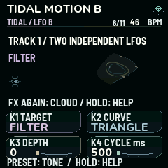
30 / TIDAL / LFO B
Reference illustration from 2.3 for retained controls; see the 2.4 chapter for changed operation.
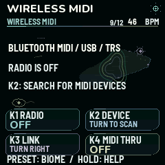
31 / WIRELESS MIDI
Reference illustration from 2.3 for retained controls; see the 2.4 chapter for changed operation.
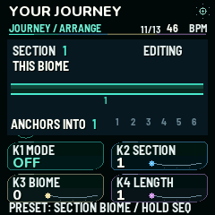
32 / JOURNEY / ARRANGE
Reference illustration from 2.3 for retained controls; see the 2.4 chapter for changed operation.
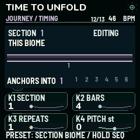
33 / JOURNEY / TIMING
Reference illustration from 2.3 for retained controls; see the 2.4 chapter for changed operation.
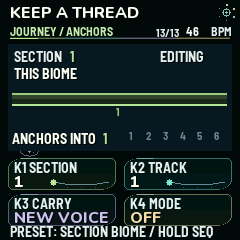
34 / JOURNEY / ANCHORS
Reference illustration from 2.3 for retained controls; see the 2.4 chapter for changed operation.
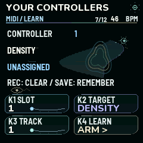
35 / MIDI / LEARN
Reference illustration from 2.3 for retained controls; see the 2.4 chapter for changed operation.
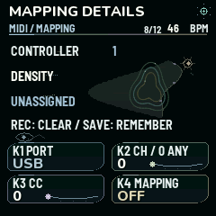
36 / MIDI / MAPPING
Reference illustration from 2.3 for retained controls; see the 2.4 chapter for changed operation.
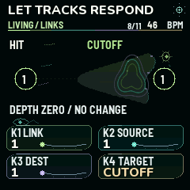
37 / LIVING / LINKS
Reference illustration from 2.3 for retained controls; see the 2.4 chapter for changed operation.
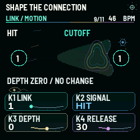
38 / LINK / MOTION
Reference illustration from 2.3 for retained controls; see the 2.4 chapter for changed operation.
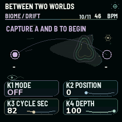
39 / BIOME / DRIFT
Reference illustration from 2.3 for retained controls; see the 2.4 chapter for changed operation.
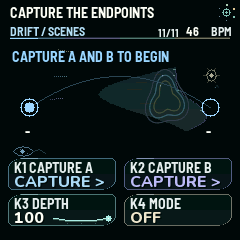
40 / DRIFT / SCENES
Reference illustration from 2.3 for retained controls; see the 2.4 chapter for changed operation.
41 / SEQUENCER / GRID
Reference illustration from 2.3 for retained controls; see the 2.4 chapter for changed operation.
42 / SEQUENCER / TOOLS
Reference illustration from 2.3 for retained controls; see the 2.4 chapter for changed operation.
43 / SEQUENCER / FILL
Reference illustration from 2.3 for retained controls; see the 2.4 chapter for changed operation.
44 / USB AUDIO
Reference illustration from 2.3 for retained controls; see the 2.4 chapter for changed operation.
45 / ITINERA / BIOME RADIO
Reference illustration from 2.3 for retained controls; see the 2.4 chapter for changed operation.
46 / VOICE / DETAIL
Keep what you make.
Factory Biomes are preserved. Save edited copies to User Banks, then export the saved banks and your live Biome separately before installing another firmware. A Live List reference does not save a new copy of the music.
Thank you to Yimiblú (@yimiblu_lofi_ambient) for detailed MIDI and animation feedback that shaped the music-following dreams, and to every tester. Yimiblú on Instagram
With special thanks to Sarmiento (Funkelectric), Yimiblú, our Screen Reader testers and the people sharing careful reports, code, ideas and music. Selected DSP by Émilie Gillet / Mutable Instruments; fm1-base and felucca-bsp platform. Created by Kid Bunka.